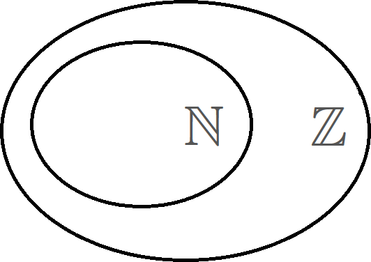
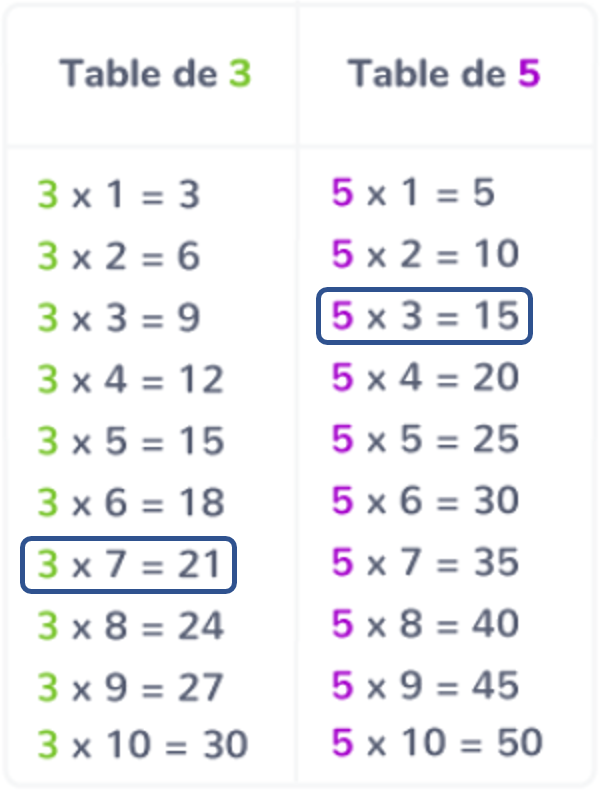
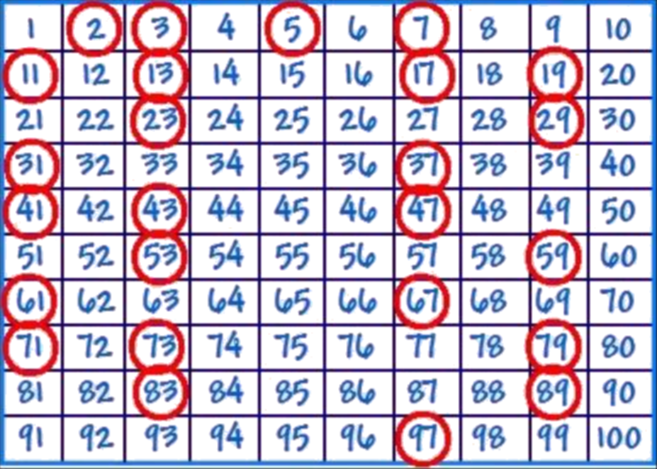
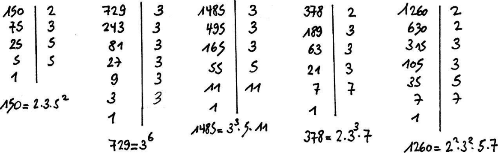

Arithmétique
Nombres entiers
Entier naturel
Def
Un nombre entier naturel est un nombre entier qui est positif.
L’ensemble des nombres entiers naturels est noté $\N$.
$$\N=\left\{0 ;1 ;2 ;3 ;4 ;…\right\}$$
Ex
- $4\in\N$
- $-2 \notin \N$
Entier relatif
Def
Un nombre entier relatif est un nombre entier qui est positif ou négatif.
L’ensemble des nombres entiers relatifs est noté $\Z$.
$$\Z = \left\{…;-3 ; -2 ; -1 ; 0 ;1 ;2 ;3 ;…\right\}$$

Ex
- $14\in\Z$
- $-4 \in \Z$
- $0.33\notin\Z$
Multiples et diviseurs
Multiple et diviseur
Def
Soit $a$ et $b$ deux entiers. On dit que $a$ est un multiple de $b$ s’il existe un entier $k$ tel que :
$$a = k\times b$$
On dit alors que $b$ est un diviseur de $a$.
Ex
- $15~$ est multiple de $~3~$ car $~15=5\times 3\qquad$ …et $~3$ est un diviseur de $15$
- $7~$ est un diviseur de $~21~$ car $~21=7\times 3\qquad$ …et $~21$ est multiple de $7$
- $5~$ n’est pas un multiple de $~17~$ car il n’existe pas d’entier $k$ tel que $17=k\times 5$

Somme de deux multiples
Prop
La somme de deux multiples d’un entier $a$ est un multiple de $a$.
Ex
- $15$ est multiple de $3\quad(3\times 5=15)$
- $21$ est multiple de $3\quad(3\times 7=21)$
Donc $(15+21)=36$ est multiple de $3\quad(3\times 12=36)$
Demo
Soit $b$ et $c$ deux multiples de $a$.
- $b$ est un multiple de $a$ donc il existe un entier $k_1$ tel que $b = a\times k_1$
- $c$ est un multiple de $a$ donc il existe un entier $k_2$ tel que $c = a\times k_2$
On a :
$$\begin{aligned}(b + c)&= a\times k_1 +a\times k_2\\&=a\times (k_1 + k_2)\\&=a\times k\qquad\quad\text{où }~k=k_1+k_2\end{aligned}$$
Or, $k = k_1+k_2$ est un entier car somme de deux entiers
Donc $(b+c)=a\times k\quad$ avec $k$ entier $\Rightarrow (b + c)$ est donc un multiple de $a$.
Methode
Résoudre un problème avec des multiples ou des diviseurs
Montrons que la somme de trois entiers consécutifs est un multiple de 3.
Soit trois entiers consécutifs : $\textcolor{blue}{(n)}$, $\textcolor{red}{(n+1)}$ et $\textcolor{green!30!black!50}{(n+2)}$, où $n$ est un entier quelconque.
Leur somme est :
$$ \begin{aligned} S & =\textcolor{blue}{n}+(\textcolor{red}{n+1})+(\textcolor{green!30!black!50}{n+2}) \\ & =n+n+1+n+2 \\ & = 3n+3\qquad=3(n + 1) \end{aligned} $$
Soit $k$ l’entier tel que $k=n+1$.
Donc $S = 3k$, avec $k$ entier $\quad\Rightarrow S$ est un multiple 3.
Nombres pairs, impairs
Pair / impair
Def
- Un nombre pair est un multiple de $2$.
- Un nombre impair est un nombre qui n’est pas pair.
Ex
- $34$, $68$, $9756786$ et $0$ sont des nombres pairs.
- $567$, $871$ et $1$ sont des nombres impairs.
Propriétés : pair / impair
Prop
- Un nombre pair s’écrit sous la forme $~(2k)~$, avec $k$ entier.
- Un nombre impair s’écrit sous la forme $~(2k+1)~$, avec $k$ entier.
Prop
Le carré d’un nombre impair est impair.
Ex
- $13^2=169$
- $5^2=25$
- $\ldots$
Demo
Soit $a$ est un nombre impair.
On peut l’écrire sous la forme $a=2k+1$, avec $k$ entier.
On a :
$$ \begin{aligned} a^2&= (2k + 1)^2\\ &= 4k^2 +4k + 1\\ &= 2\underbrace{\left(\textcolor{blue}{2k^2 + 2k}\right)}_{k’} + 1\\ &= 2\textcolor{blue}{k’} + 1\qquad\text{avec}~\textcolor{blue}{k’=2k^2+2k} \end{aligned} $$
$k’$ est entier car somme de deux entiers
$a^2$ s’écrit sous la forme $~a^2=2k’+1\qquad\Rightarrow a^2$ est impair.
Methode
Résoudre un problème avec des nombres pairs ou impairs
Montrons que le produit de deux entiers consécutifs est un nombre pair.
Soit deux entiers consécutifs $~\textcolor{red}{n}~$ et $~\textcolor{blue}{n+1}~$.
1er cas : $n$ pair
Si $n$ est pair, alors il s’écrit sous la forme $~n=2k~$, avec $k$ entier.
Alors le produit des deux entiers consécutifs s’écrit :
$$\begin{aligned}\textcolor{red}{n}(\textcolor{blue}{n+1})&=2\underbrace{k(2k+1)}_{k_1}\\&=2k_1\qquad\text{avec }~k_1 =k(2k+1)~\text{ entier}\end{aligned}$$
Donc $n(n+1)$ est pair.
2ème cas : $n$ impair
Si $n$ est impair, alors il s’écrit sous la forme $~n = 2k+1~$, avec $k$ entier.
Alors le produit des deux entiers consécutifs s’écrit :
$$\begin{aligned}\textcolor{red}{n}(\textcolor{blue}{n+1})&=(2k+1)(2k+2)\\&=2\underbrace{(2k+1)(k+1)}_{k_2}\\&=2k_2\qquad\text{avec }~k_2 =(2k+1)(k+1)~\text{ entier}\end{aligned}$$
Donc $n(n+1)$ est pair.
Dans tous les cas, le produit de deux entiers consécutifs est un nombre pair.
Nombres premiers
Définition : Nombre premier
Def
Un nombre est premier s’il possède exactement deux diviseurs qui sont $1$ et lui-même.
Ex
$\quad 2$, $3$, $5$, $7$, $11$, $13$, $17$, $19$, $23$, …

Les nombres premiers de $1$ à $100$
Un très grand nombre premier : 22 989 432 637 682 048 935 578 359 759 258 512 929 075 458 593 285 426 151 563 351 225 878 608 019 921 960 174 786 937 174 324 066 918 557 552 262 283 220 478 419 095 917 521 791 323 874 771 300 201 334 066 843 810 139 337 069 250 339 905 576 793 882 539 603 587 327 037 857 904 876 391 811 440 492 908 489 972 485 276 368 673 701 887
Rem. : Le nombre $1$ n’est pas premier car il n’a qu’un seul diviseur.
Deux nombres premiers entre-eux
Def
On dit que deux nombres sont premiers entre eux lorsque leur seul diviseur commun est $1$.
Ex
$20$ et $21$ sont premier entre-eux car :
- $20=5\times 2\times 2\times \textcolor{red}{1}$
- $21=7\times 3\times \textcolor{red}{1}$
Décomposition d’un nombre
Prop
Tout nombre non premier peut se décomposer en produits de facteurs premiers.
Cette décomposition est unique (à l’ordre des facteurs près).
Ex
Décomposons $420$ en facteurs premiers
$$\begin{array}{l|r}420 & 2\\210 & 2\\105 & 3\\35 & 5\\7 & 7\\1 &~\end{array}$$
Donc $\quad 420\quad=2\times 2\times 3\times 5\times 7\quad=2^2\times 3^1\times 5^1\times 7^1$
Ex
Décomposons $150$, $729$, $1485$, $378$ et $1260$ en facteurs premiers

Fraction irréductible
Def
On dit qu’une fraction est irréductible, lorsque son numérateur et son dénominateur sont premiers entre eux.
Ex
- $\frac{7}{5}$ est irréductible
- $\frac{21}{144}$ n’est pas irréductible car $\frac{21}{144}=\frac{7\times 3}{48\times 3}=\frac{7}{48}\qquad\Rightarrow\frac{7}{48}$ est irréductible.
Methode
Rendre une fraction irréductible
Rendons irréductible la fraction $\dfrac{60}{126}$.
Pour rendre une fraction irréductible, il faut décomposer son numérateur et son dénominateur en produits de facteurs premiers.
$$ \begin{array}{l|r}60 & 2\\30 & 2\\15 & 3\\5 & 5\\1 &~\end{array} \qquad\begin{array}{l|r}126 & 2\\63 & 3\\21 & 3\\7 & 7\\1 &~\end{array} $$
On ainsi les décompositions de $60$ et $126$ :
$$60 = 2\times 2\times 3\times 5\qquad 126 = 2\times 3\times 3\times 7$$
On a :
$$\frac{60}{126}\quad= \frac{\textcolor{red}{2} \times 2 \times \textcolor{red}{3} \times 5}{\textcolor{red}{2} \times 3 \times \textcolor{red}{3} \times 7}\quad= \frac{2 \times 5}{3 \times 7}\quad=\frac{10}{21}$$
$10$ et $21$ sont premiers entre eux, donc:
$\dfrac{10}{21}$ est la fraction irréductible égale à $\dfrac{60}{126}$